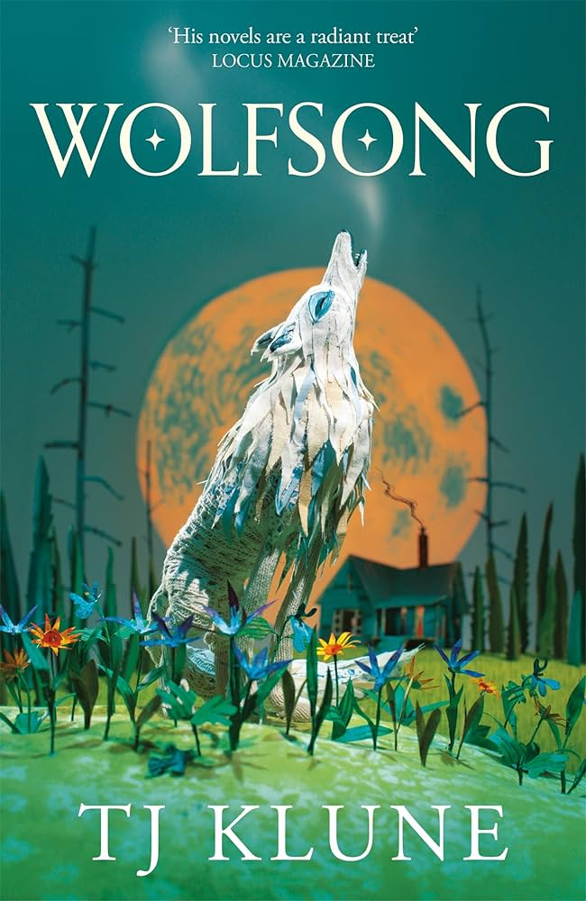
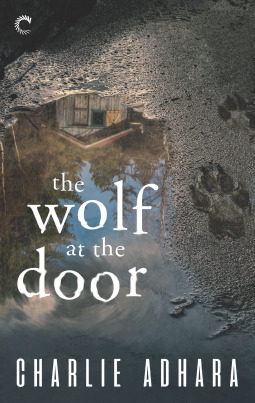

Gay Werewolves 🐺 🌈 🌕

Wolfsong by TJ Klune follows the story of Oxnard Matheson as he turns from a young boy abandoned by his abusive father into a young man that any parent would be proud of. He is supported by his friends and family, including but not limited to his mother Maggie, his pseudo-father Gordo, and the guys at his work. However, on his sixteenth birthday he meets Joe Bennett, a ten year old boy with the energy of a tornado that changes his life forever. Caught between his duty to his family and his inexplicable draw to the mysterious Bennetts, can Ox get to the bottom of what's going on in the small town of Green Creek? And what is with the howling in the woods?

The Wolf at the Door by Charlie Adhara follows an ex-FBI agent who is partnered with the enemy in this suspenseful first installment of Charlie Adhara’s Big Bad Wolf series. Reeling from the trauma from being attacked by a werewolf (and finding out werewolves are real!), agent Cooper Dayton finds himself trying to hunt down some of the big bad wolves who are preying on the innocent. The catch? He has to partner up with one in order to do it: the easy-going, rugged, and sexy Oliver Park. Can these two set aside their differences in order to stop a string of murders? Or will one of them be next on the chopping block?